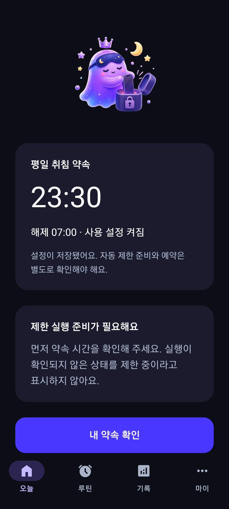
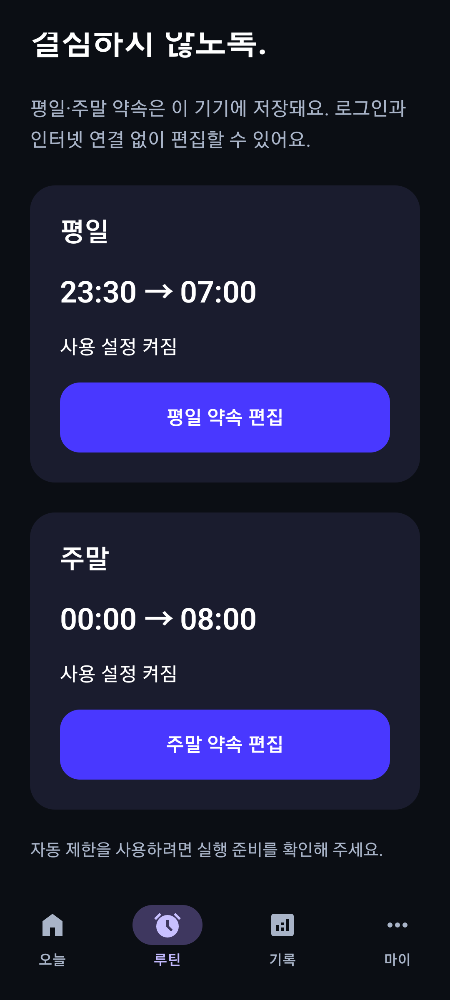
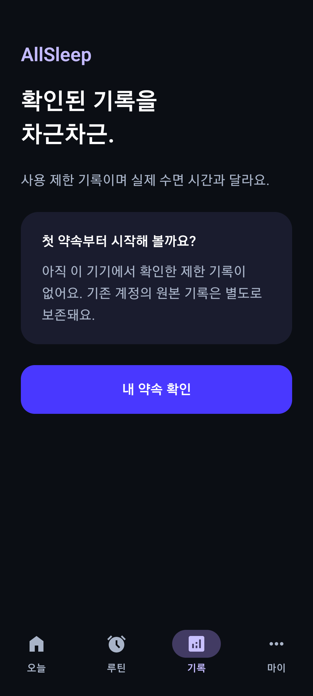
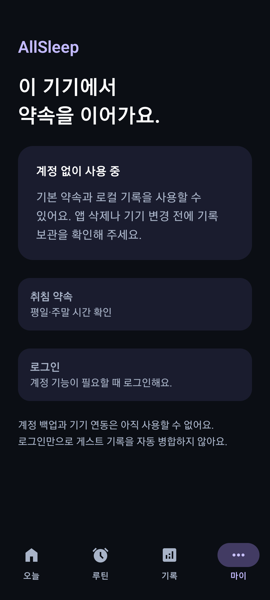
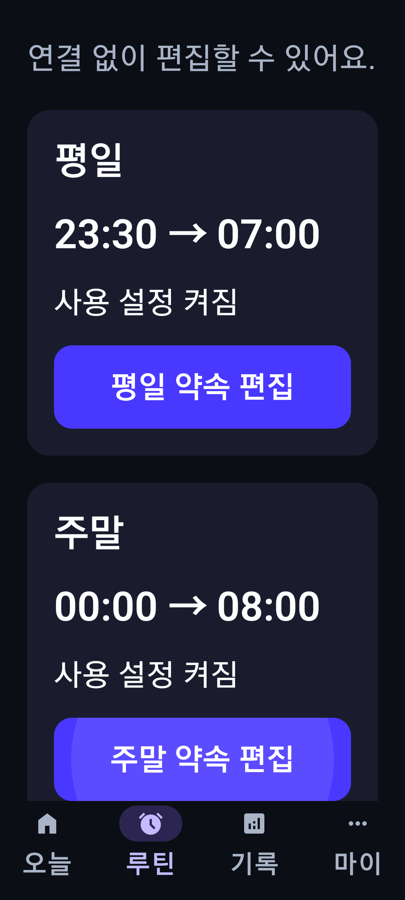
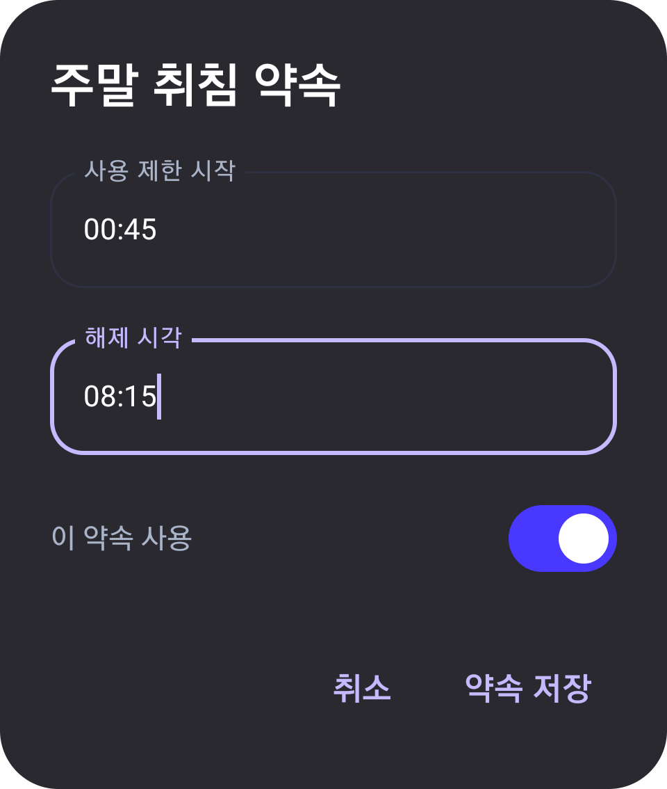

Galaxy S20 · Android 13에서 Compose 계측 테스트로 캡처했습니다. 계정과 시각은 합성 테스트 자료입니다. 오늘·루틴·큰 글꼴 화면은 버튼까지 스크롤한 상태이며, 편집 화면은 입력 중인 대화상자만 캡처했습니다. 이 단계에서는 로컬 설정과 기록 기반을 확인하며, 새 실제 제한·자동 예약은 4~6단계에서 연결합니다.





